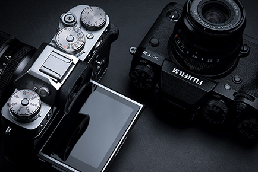
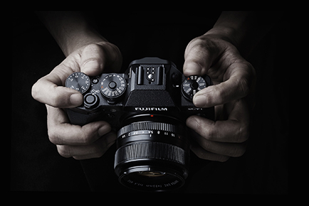

| Sensor Resolution: | 24.3 Megapixel |
|---|---|
| Optical Sensor Type: | X-Trans CMOS III |
| Sensor Format: | APS-C |
| Aspect Ratio: | 1:1, 3:2, 16:9 |
| Memory Card Type: | SD, SDHC, SDXC |
| Focus Type: | Auto & Manual |
| Viewfinder Type: | Electronic |
| Viewfinder Pixel Count: | 2,360,000 |
| Viewfinder Coverage: | 100% |
| Display Screen: | 3" Pivoting LCD |
| ISO Sensitivity: | Auto, 200-12800 |
| Shutter: | 30 - 1/32000 Second |
| Dimensions: | 5.2 x 3.6 x 1.9" |



